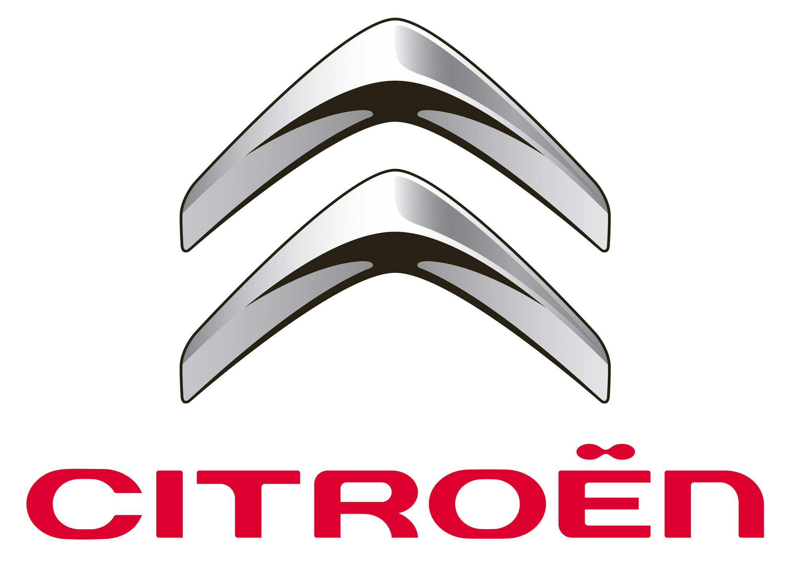

SOBRE ESTE FABRICANTE:
Citroën es una marca francesa constructora de automóviles fundada en 1919 por André Citroën, propiedad de Stellantis. en la actualidad su principal fuerte es producir carros para turismo o familiares
Para los autos de este fabricante, manejamos una garantia de 10 años o 10.000 KM por defectos de fabrica.
Somos vendedores oficiales de CITROEN